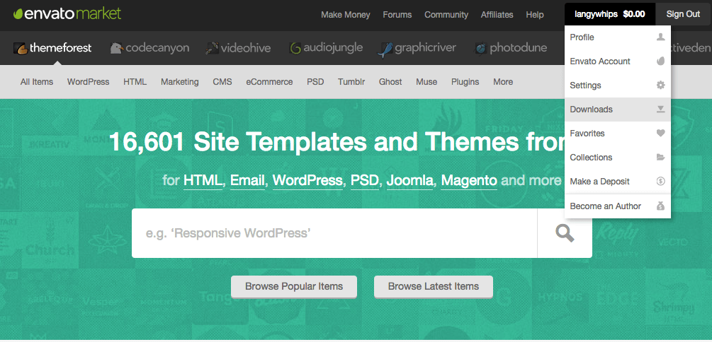
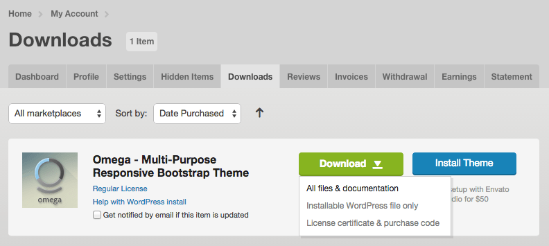
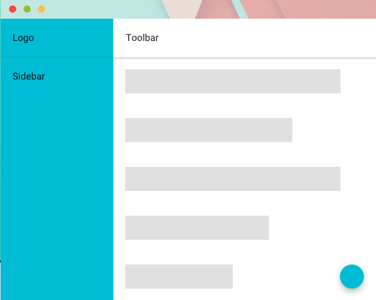
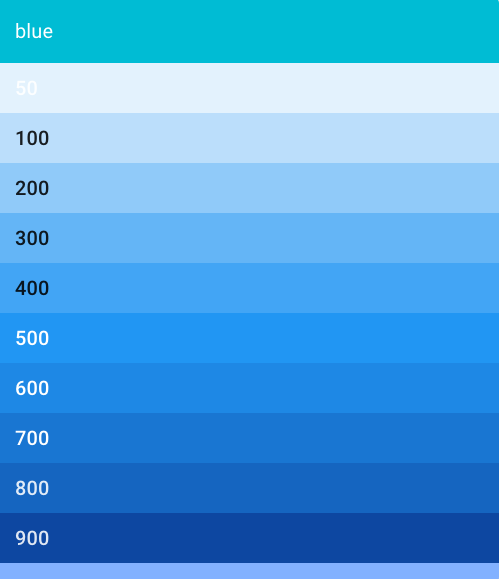

First of all thank you for purchasing triangular.
triangular is a fantastic admin template build with angularjs. It has been created with merticulous attention to Google's material design specification.
Using our experience at developing AngularJS admin templates for clients, we have tried to make an admin template that will be easy to plug in to an existing API.
We hope you will enjoy using this triangular to make wonderful things.
Triangular is built on top of a few fantastic technologies. These are AngularJs and Angular Material, both were created by Google. Triangular also uses the material design specification in its design and functionality.
Material design is a design language developed by Google and announced at the Google I/O conference on June 25, 2014. Expanding upon the "card" motifs first seen in Google Now, it is a design with increased use of grid-based layouts, responsive animations and transitions, padding, and depth effects such as lighting and shadows. Designer Matías Duarte explained that "unlike real paper, our digital material can expand and reform intelligently. Material has physical surfaces and edges. Seams and shadows provide meaning about what you can touch." Google states that their new design language is based on paper and ink.
At Google we say, “Focus on the user and all else will follow.” We embrace that principle in our design by seeking to build experiences that surprise and enlighten our users in equal measure. This site is for exploring how we go about it. You can read our design guidelines, download assets and resources, meet our team, and learn about job and training opportunities.
Here are some resources about Material Design
AngularJS is a structural framework for dynamic web apps. It lets you use HTML as your template language and lets you extend HTML's syntax to express your application's components clearly and succinctly. Angular's data binding and dependency injection eliminate much of the code you would otherwise have to write. And it all happens within the browser, making it an ideal partner with any server technology.
Angular is what HTML would have been, had it been designed for applications. HTML is a great declarative language for static documents. It does not contain much in the way of creating applications, and as a result building web applications is an exercise in what do I have to do to trick the browser into doing what I want?
Before you get started with the template it is recommended that you learn about AngularJS. Here are a few articles and videos that will help you get up to speed.
At the start of this project we used the Yeoman generator for AngularJS with GulpJS to generate the gulp tasks and structure of the app. This is a good place to look if you are looking to do extra build processes with the template.
For developers using AngularJS, Angular Material is both a UI Component framework and a reference implementation of Google's Material Design Specification. This project provides a set of reusable, well-tested, and accessible UI components based on Material Design.
Triangulars code follows the John Pappa style guide for angular. This is an opinionated style guide for syntax, conventions and structuring of angular apps that is now endorsed by the Google angular team.
In this section we will show you how to install all the prerequisites you need on your system to run triangular.
Here is a handy install checklist for you to go through. Instructions on how to install them are below the table.
| Prerequisite | Description |
|---|---|
| Node.js | Javascript runtime needed to build the app |
| Git | Source Control for bower installation & access latest code from GitHub |
| Bower | Package Installer used to grab dependencies needed in the app |
| GulpJs | Automation system for building the app |
We recommend installing the latest version of node.
You can download the latest of node.js from here alternatively there are guides on how to install using a package manager.
Once you have installed node you can check that it is working correctly by opening a command prompt / terminal and typing
node --versionand see something like this
$ node --version
4.4.5You will also need to install the Git source control system on your machine. Check out this guide on how to install on Windows, Mac and Linux.
Bower is a package manager built with nodejs so you will need to have installed nodejs before attempting to install bower.
To install bower just type the following command into your terminal.
npm -g install bowerThis tells node's package manager (npm) to install bower on your system. The -g tells npm to install this package globally, this means that you can use this command in any folder on your system.
GulpJS automates building and testing your app. It is also built with nodejs so you will need to have installed nodejs before attempting to install.
To install gulp just type the following command into your terminal.
npm -g install gulp-cliThis tells node's package manager (npm) to install gulp-cli on your system. The -g tells npm to install this package globally, this means that you can use this command in any folder on your system.
Now you have all the prerequisites installed on your system the next step is to grab the latest copy of triangular from themeforest.
So first of all you will need to log in to your themeforest account.
After that goto your downloads page

From there locate the triangular template click the download button and then select All files & documentation

You should now have a file that looks something like this.
themeforest-11711437-triangular-material-design-admin-template-angularjs.zip
In order to get at the goodness inside you will need to unzip this file.
Once you have unzipped the triangular zip file you will find the following folders have been created.
| Folder / File | Contents |
|---|---|
| changelog.md | lists changes to each version of the template |
| source/ | contains the templates source files |
| demo/ | compiled version of source files (minified version of demo site) |
| docs/ | the documentation you are reading now |
| extras/ | lots of extra material design & code goodies |
The source folder contains all the templates source code files.
The demo folder contains a built version of the source files, this is an exact copy of the demo site that is running on triangular's ThemeForest demo site.
The docs folder contains a copy of the latest documentation for triangular, there is also an online copy available.
The extras folder contains lots of material design graphics and a copy of the triangular PHP API that provides the dummy content for the demo.
Once you have downloaded and unzipped the main template download zip.
You will find several folders have been created, one of which will be a folder called source.
This is where you will find all the code for triangular.
Inside the source folder you will see a folder structure like this:
| Folder / File | Contents |
|---|---|
| .bowerrc | Sets folder to install bower components |
| .editorconfig | Sets editor coding standards |
| .eslintrd | Sets eslint configuration |
| .yo-rc.json | Yeoman config |
| bower.json | Lists all packages to be installed by bower |
| gulpfile.js | Main gulp file |
| karma.conf.js | Karma unit test config |
| package.json | Lists all packages to be installed by node package manager (npm) |
| protractor.conf.js | Protractor end to end config |
| e2e/ | Protractor end to end test folder |
| gulp/ | Contains gulp build source files |
| src/ | Contains the triangular app code (JS/SASS/HTML/ETC) |
| test/ | Karma unit test folder |
Inside the source folder you will find the following folders and files
| Folder / File | Contents |
|---|---|
| app/ | Contains the main app files |
| assets/ | Contains app image files |
| 401.tmpl.html | 401 page html |
| 404.tmpl.html | 404 page html |
| 500.tmpl.html | 500 page html |
| favicon.png | Favourite icon |
| index.html | Main index html file |
Inside the app folder you will find the following files and folders
| Folder / File | Contents |
|---|---|
| examples/ | All the example modules used in the app |
| i18n/ | App translation files |
| layouts/ | Templates used for footer, sidenavs, loader & toolbar in app |
| permission/ | Optional module to add permissions to routes and menus |
| scss/ | Style SCSS for the app |
| seed-module/ | Example starter module to teach module structure & function |
| translate/ | Optional module to add multi-language translations to template |
| triangular/ | The main triangular module (we recommend not changing this so updates are easy) |
| app.module.js | The main app module file |
| app.run.js | Handles error redirection on state change error |
| app.scss | The main app scss file |
| config.chartjs.js | Config to make chartjs plugin use MD colors |
| config.route.js | Config to set up your app routes |
| config.triangular.layout.js | Config to set triangulars default admin page layout |
| config.triangular.settings.js | Config to set triangulars default settings |
| config.triangular.themes.js | Config to set up triangulars theme colors and themes |
| error-page.controller.js | Controller for 401, 404 & 500 error pages |
| translate.filter.js | Translation filter used by optional translation module |
| value.googlechart.js | Adds a value used by google charts plugin |
Each module in triangular uses John Papa's recommended structure and naming conventions.
To find out how this structure works we will describe the seed-module module's structure below.
| Folder / File | Contents |
|---|---|
| seed-page.controller.js | Example Controller for the seed-page.tmpl.html page |
| seed-page.tmpl.html | Example page HTML |
| seed-page.tmpl.scss | Example page SCSS for CSS styling |
| seed.module.js | Seed module js file |
| seed.config.js | Sets up the modules routes and adds menus to triangular |
Hopefully now you have Installed the prerequisites and have read about the file and folder structure.
So let's start coding.
There are two command you need to run from inside the triangular source folder (the main root directory of the source folder that contains gulpfile.js).
These two commands will install the js packages needed to run the development server and create production builds.
Run the following command from the root of your source files to install the node modules listed in packages.json
npm installRun the following command from the root of your source files to install the bower packages listed in bower.json
bower installOnce you have all the node packages & bower packages) installed all ready to go you can start developing.
To do this you just need to start a local development server, from the root of the source folder run this command.
gulp serveThis should automatically open up a browser window with the template running.
Once the development server is up and running any changes you make to the HTML & JS & SASS files will trigger your browser window to auto refresh with your changed code.
You can read about how the templates modules are structured here
Take a look at all the example codes included with the template you can find them in the app/examples/ folder.
All the code for the triangular module is contained inside the app/triangular/ folder. It is best to not modify this code as this code will be updated over time.
If you need to be able to change anything inside triangular and can not do so programatically from inside your app. Please create an issue in our GitHub repo.
The super easy way to change the template logo is to replace this file.
src/assets/images/logo.pngWith your own logo. This will replace the logo used throughout the theme (Logo above sidebar, loading animations, etc)
If you want to change the image filename used for the template logo edit the following line in config.triangular.settings.js
triSettingsProvider.setLogo('assets/images/logo.png');To change the name that is shown in the logo bar at the top of the sidemenu & loading animation just edit the following line in config.triangular.settings.js
triSettingsProvider.setName('triangular');Triangular will create the title for each page using site title & the breadcrumbs on the page all separated by a separator character.
Triangular creates the following title
site title + separator + breadcrumb + separator + breadcrumbSo for example if you have your site title set to My App and your separator set to | and you were in Elements -> Buttons page your title would be.
My App | Elements | ButtonsTo set the title and the separator edit the following code on config.triangular.settings.js
triRouteProvider.setTitle('Triangular');
triRouteProvider.setSeparator('|');You can find the code for the toolbar in the following folder.
app/layouts/toolbarYou are free to modify this code to suit your needs.
Inside the folder you will find the following files.
| Folder / File | Contents |
|---|---|
| toolbar.controller.js | Toolbar Controller for the toolbar.tmpl.html page |
| toolbar.tmpl.html | Toolbar HTML |
| toolbar.tmpl.scss | Toolbar SCSS for CSS styling |
If you want triangular to use a different HTML file or controller to the ones in app/layouts/toolbar you can override them in the config.triangular.layout.js file.
You can change both the html file and the controller used in the toolbar by changing the following code.
// top toolbar HTML and controller
triLayoutProvider.setDefaultOption('toolbarTemplateUrl', 'app/layouts/toolbar/toolbar.tmpl.html');
triLayoutProvider.setDefaultOption('toolbarController', 'ToolbarController');The toolbar has a few built in settings that you can change by editing the config.triangular.layout.js file.
You can play around with these settings on the Layout Composer page of the demo.
Triangular comes with both a service and a provider for setting the items in the sidemenu this allows you to set menus during the config stage or at runtime.
To add a menu to the sidebar you just need to create a module config and inject the triMenuProvider.
For example create a file called myapp.config.js in your app folder.
myapp.config.js
(function() {
'use strict';
angular
.module('app')
.config(routeConfig);
/* @ngInject */
function routeConfig($stateProvider, triMenuProvider) {
// first create a state that your menu will point to .
$stateProvider
.state('triangular.admin-default.my-page', {
url: '/my-page',
templateUrl: 'app/my-page.tmpl.html'
});
// next add the menu item that points to the above state.
triMenuProvider.addMenu({
name: 'Parent Menu',
icon: 'zmdi zmdi-calendar-check',
type: 'dropdown',
priority: 1,
children: [{
name: 'My Page',
type: 'link',
state: 'triangular.admin-default.my-page'
}]
});
}
})();The code above will make state using UI Router and then add a menu item that will point to that states page.
In order to modify a menu at runtime you can also inject the triMenu service.
Take the following controller example.
(function() {
'use strict';
angular
.module('app')
.controller('MenuController', MenuController);
/* @ngInject */
function MenuController(triMenu) {
var vm = this;
////////////////
function toggleExtraMenu(showMenu) {
// add a menu to the sidebar
triMenu.addMenu({
name: 'MENU.MENU.DYNAMIC-MENU',
icon: 'zmdi zmdi-flower-alt',
type: 'link',
priority: 0.0,
state: 'triangular.admin-default.menu-dynamic-dummy-page'
});
// remove a menu from the sidebar
triMenu.removeMenu('triangular.admin-default.menu-dynamic-dummy-page');
}
}
})();The above code will add and remove a menu item from the main menu.
The side menu has a few built in settings that you can change by editing the config.triangular.layout.js file.
You can play around with these settings on the Layout Composer page of the demo.
You can find the code for the left sidenav in the following folder.
app/layouts/leftsidenavYou are free to modify this code to suit your needs.
Inside the folder you will find the following files.
| Folder / File | Contents |
|---|---|
| leftsidenav.controller.js | Controller for the leftsidenav.tmpl.html page |
| leftsidenav.tmpl.html | HTML |
If you want triangular to use a different HTML file or controller to the ones in app/layouts/leftsidenav you can override them in the config.triangular.layout.js file.
You can change both the html file and the controller used in the toolbar by changing the following code.
// left sidemenu HTML and controller
triLayoutProvider.setDefaultOption('sidebarLeftTemplateUrl', 'app/layouts/leftsidenav/leftsidenav.tmpl.html');
triLayoutProvider.setDefaultOption('sidebarLeftController', 'LeftSidenavController');You can find the code for the right sidenav in the following folder.
app/layouts/rightsidenavYou are free to modify this code to suit your needs.
Inside the folder you will find the following files.
| Folder / File | Contents |
|---|---|
| rightsidenav.controller.js | Controller for the rightsidenav.tmpl.html page |
| rightsidenav.tmpl.html | HTML |
If you want triangular to use a different HTML file or controller to the ones in app/layouts/rightsidenav you can override them in the config.triangular.layout.js file.
You can change both the html file and the controller used in the toolbar by changing the following code.
// right sidemenu HTML and controller
triLayoutProvider.setDefaultOption('sidebarRightTemplateUrl', 'app/layouts/rightsidenav/rightsidenav.tmpl.html');
triLayoutProvider.setDefaultOption('sidebarRightController', 'RightSidenavController');To change the version number that is shown in the footer just edit the following line in config.triangular.settings.js
triSettingsProvider.setVersion('2.0');To change the copyright that is shown in the footer just edit the following line in config.triangular.settings.js
triSettingsProvider.setCopyright('©' + now.getFullYear() + ' oxygenna.com');To change the name that is shown in the footer just edit the following line in config.triangular.settings.js
triSettingsProvider.setName('triangular');You can find the code for the footer in the following folder.
app/layouts/footerYou are free to modify this code to suit your needs.
Inside the folder you will find the following files.
| Folder / File | Contents |
|---|---|
| footer.controller.js | Controller for the footer.tmpl.html page |
| footer.tmpl.html | HTML |
If you want triangular to use a different HTML file or controller to the ones in app/layouts/footer you can override them in the config.triangular.layout.js file.
You can change both the html file and the controller used in the toolbar by changing the following code.
// footer HTML
triLayoutProvider.setDefaultOption('footerTemplateUrl', 'app/layouts/footer/footer.tmpl.html');You can find the code for the loader in the following folder.
app/layouts/loaderYou are free to modify this code to suit your needs.
Inside the folder you will find the following files.
| Folder / File | Contents |
|---|---|
| loader.controller.js | Controller for the loader.tmpl.html page |
| loader.scss | SCSS files for CSS |
| loader.tmpl.html | HTML |
If you want triangular to use a different HTML file or controller to the ones in app/layouts/loader you can override them in the config.triangular.layout.js file.
You can change both the html file and the controller used in the toolbar by changing the following code.
// loader screen HTML & controller
triLayoutProvider.setDefaultOption('loaderTemplateUrl', 'app/layouts/loader/loader.tmpl.html');
triLayoutProvider.setDefaultOption('loaderController', 'LoaderController');Angular Material already comes with a system for handling themes and palettes.
You can read about them here
You can find all the theme config code discussed below in the app theme config file.
app/config.triangular.themes.js
A palette is a collection of hues you can use pre configured material design palettes or create your own.
Once you have decided on / created your color scheme you can then use palettes to create a theme.
The following color palettes are built into angular material.
If you don't want to use the palettes provided by material design, you can also create your own. Just add a config function that injects the $mdThemeingProvide and define the colors you want to use.
(function() {
'use strict';
angular
.module('app')
.config(themesConfig);
/* @ngInject */
function themesConfig ($mdThemingProvider) {
$mdThemingProvider.definePalette('amazingPaletteName', {
'50': 'ffebee',
'100': 'ffcdd2',
'200': 'ef9a9a',
'300': 'e57373',
'400': 'ef5350',
'500': 'f44336',
'600': 'e53935',
'700': 'd32f2f',
'800': 'c62828',
'900': 'b71c1c',
'A100': 'ff8a80',
'A200': 'ff5252',
'A400': 'ff1744',
'A700': 'd50000',
'contrastDefaultColor': 'light', // whether, by default, text (contrast)
// on this palette should be dark or light
'contrastDarkColors': ['50', '100', //hues which contrast should be 'dark' by default
'200', '300', '400', 'A100'],
'contrastLightColors': undefined // could also specify this if default was 'dark'
});
}
});Material Angular has a provider that allows you to create themes called mdThemingProvider however with triangular we created our own theme provider triThemingProvider.
Triangular's theme provider copies exactly the functionality provided by the mdThemingProvider but allows us to dynamically load themes which saves on the amount of extra CSS created by the template
First of all you will need to create some themes to use to color the template areas.
You can do this using the triThemingProvider to assign palettes.
Material Angular comes with several material design palettes built in. You can view the palettes available here.
triThemingProvider.theme('cyan')
.primaryPalette('cyan')
.accentPalette('amber')
.warnPalette('deep-orange');The line above creates a theme called "cyan" which sets the primary palette to cyan and the accent and warn palettes to amber and deep-orange.
Next we can make a 2nd theme to go with the cyan theme.
triThemingProvider.theme('white-cyan')
.primaryPalette('white')
.accentPalette('cyan', {
'default': '500'
})
.warnPalette('deep-orange');This theme has white as its primary palette and cyan as its accent palette.
Once you have created a theme you can use it to create a skin for your app.
Triangular has the ability to assign themes to different parts of the template.

There are 4 areas of the template that you can assign themes to.
You can see an example of this on the skins page.
Now that we have some themes to play with we can assign them to the areas of the template.
We can do this using the triSkinsProvider.
triSkinsProvider.skin('cyan-cloud', 'Cyan Cloud')
.sidebarTheme('cyan')
.toolbarTheme('white-cyan')
.logoTheme('cyan')
.contentTheme('cyan');So above we have created a theme called Cyan Cloud that uses the two themes we created in the previous steps.
The sidebar and logo are using cyan and the toolbar and content areas are using white-cyan
The following skins were created for triangular.
triangular comes with many beautiful themes.
You can view and try them all here.
To change the default skin is super easy.
Just edit config.triangular.themes.js and change this line to a skin you would like to load.
triSkinsProvider.setSkin('cyan-cloud');Change this to any of the provided skin names
For example to change to the Plumb Purple theme you would change to.
defaultSkin: 'plumb-purple'By default the template allows users to select a skin that is then stored in a cookie.
If you want to disable this just edit config.triangular.themes.js and remove the following line.
triSkinsProvider.useSkinCookie(true);triangular uses Angular Translate to translate strings in the template.
Angular translate has great documentation as well as an API guide.
In order to set the languages that your app supports you just need to edit the translate module config file at app/translate/translate.config.js
At the top of the config file is this code.
var appLanguages = [{
name: 'Chinese',
key: 'zh'
},{
name: 'English',
key: 'en'
},{
name: 'French',
key: 'fr'
},{
name: 'Portuguese',
key: 'pt'
}];This sets out the name and keys of the language that your app will support.
key: fr will make the app load app/i18n/fr.json
In order to translate some text in a page just use the translate directive in your HTML.
for example
<h1 translate>Settings</h1>Then edit or create a json translation file in your app/i18n folder.
So for example to translate to French we would create a new file called fr.json in the app/i18n folder and add the following json.
{
"Settings": "Paramètres",
}You will then see that your Settings text is translated into Paramètres.
Each menu item is filtered with the translate filter. So just make sure that the name you use for your menu is translated in your i18n json files.
For example in app/examples/charts/charts.config.js you will find the following code.
triMenuProvider.addMenu({
name: 'Charts',
icon: 'zmdi zmdi-chart',
type: 'dropdown',
priority: 5.1,
...
});So for example to translate to French we should have translation in our i18n/fr.json file that looks like this.
{
"Charts": "Graphiques",
}Then the menu item will use Graphiques for it's name.
We have built in an auto translater into triangular that sends all the strings in your i18n folders to Yandex to be translated.
It then writes translation files in your chosen language.
First of all to use this you will need to get a Yandex API Key.
Once you have a key edit this file
app/gulp/translate.jsAt the top of the file you will see this code
// ADD YOUR YANDEX API KEY HERE
// go here for more info
// https://tech.yandex.com/translate/
var YANDEX_API_KEY = '';edit the YANDEX_API_KEY and add your api key
var YANDEX_API_KEY = '1234567894621695846516546951651981';Once this is done, open up a terminal and cd to your app directory.
From there you can run the gulp task that will translate the template translation files.
You need to specify 2 languages e.g.
gulp translate --from en --to frThe command above will grab all en.json files from all your i18n folders send them to Yandex to be translated into French.
Once this is done the resulting translations will be written to fr.json files in each coresponding i18n folder.
Out of the box triangular puts all the translations strings of the app into one file in the app/i18n folder.
But it is also possible to separate all the translations into your angularjs modules.
To do this just create a new folder inside your module with the name i18n and add your translation files into there.
So for example to make the examples/chart module take care of its own translations you would create the following folder app/examples/chart/i18n and then add your translation json files inside there.
After that the last thing to do is tell angular translate to look in that folder when it is looking for translations. Edit app/translate/translate.config.js and add the following code.
$translatePartialLoaderProvider.addPart('app/examples/chart');Adding this tells angular translate to also look in your newly created folder.
Out of the box triangular is multi-language, but we realise this might not be for everyone. So we have made turning off multi-language is very simple.
Edit the app module file app/app.module.js and comment out or remove this line
'app.translate',This will stop the app translate module from being loaded and therefore stop all translation functionality.
triangular comes with some pre defined fonts that you can try out.
Goto the demo site to take a look.
Changing the font that is used by triangular is very easy.
First of all choose a font from Google Fonts (we reccommend using a font with 300,400,500 and 700 weights available).
Once you have a font you would like to use edit index.html and edit the contents of the head tag.
You will see a section of code like this.
<link rel="stylesheet" href="//fonts.googleapis.com/css?family=RobotoDraft:300,400,500,700,400italic">Google Fonts wil tell you the correct code to replace this with when you choose to use a font from the Google Fonts Site.
Once you have replaced this link tag with the one suggested by Google Fonts, edit the /app/src/app.scss file and change the following line to use your new font family.
button, select, html, textarea, input {
font-family: RobotoDraft, Roboto, 'Helvetica Neue', sans-serif;
}The CSS for triangular is generated using Sass .
You can find the Sass code in the following places
| Folder / File | Contents |
|---|---|
| src/app.scss | The main app sass file |
| src/triangular/triangular.scss | Contains all the css needed for the triangular module do not modify |
Also each module imports its own scss files.
For example the elements module has its own scss file here.
app/examples/elements/elements.module.scsstriangular & Angular Material use the flexible box model to layout elements on the page.
You can read all about how the flex box model is implemented in the layout section of the Angular Material Docs.
We have provided some helper CSS classes to help easily create pages.
| CSS Class | Description |
|---|---|
full-height |
Makes a container use the full height of its parent. |
full-width |
Makes a container use the full width of its parent. |
padded-content-page |
Adds default padding to a page |
| CSS Class | Description |
|---|---|
margin-normal |
Adds the default 16px margin to all sides. |
margin-(0-200 in steps of 10) |
Adds a margin all around the element, in steps of 10. e.g. margin-10 |
margin-(top/bottom/left/right)-(0-200) |
Adds a margin to a specific side of an element, in steps of 10. e.g. margin-top-50 |
| CSS Class | Description |
|---|---|
padding-normal |
Adds the default 16px padding to all sides. |
padding-(0-200) |
Adds padding all around the element, in steps of 10. e.g. padding-100 |
padding-(top/bottom/left/right)-(0-200) |
Adds padding to a specific side of an element, in steps of 10. e.g. padding-top-70 |
| CSS Class | Description |
|---|---|
opacity-(0-100) |
Sets the opacity of the element. e.g. opacity-50 |
make-round |
Adds 50% border radius |
overlay-(0-100) |
Adds dark overlay to container |
The gulp automatically adds browser prefixes to your CSS using gulp-autoprefixer.
To configure this just edit
app/gulp/styles.jsYou can select which browsers you want to have compatibility with on this line.
.pipe($.autoprefixer({browsers: ['> 1%', 'last 2 versions', 'Firefox ESR', 'Opera 12.1']}))By default triangular is compatible with the last 2 versions of evergreen browsers as well as Firefox ESR and Opera 12.1
Once you have used the development server to modify the app to your needs you will want to get your new app online for everyone to see.
Triangular has a build system that will grab all the JS, HTML & SASS you have created whilst developing and collating it all together into a minimal package of HTML, CSS & JS files that you can the upload and deploy on your web server.
Once you are happy with your site you can initiate a build that will create a copy of the template that you can FTP to your web server.
Just run the command
gulp buildThis will initiate a build, once it has finished you will find a new folder has been created called dist. This is where the built files have been created, you will find the following files.
| Folder / File | Contents |
|---|---|
| app/ | Example data files and example source code |
| assets/images/ | Images used in the app |
| fonts/ | Font icon files |
| scripts/app.js | Minified App AngularJS code |
| scripts/vendor.js | Minified JS packages (jquery, angularjs, etc) |
| styles/app.css | Minified app css |
| styles/vendor.css | Minified packages css (font-awesome, chartjs, etc) |
| 401.tmpl.html | 401 page html |
| 404.tmpl.html | 404 page html |
| 500.tmpl.html | 500 page html |
| favicon.png | App FavIcon |
| index.html | Main index.html page |
If you need to troubleshoot the production build process there is also an option to run the production build in the development server.
Just run the command
gulp serve:distThe local server that runs will now be running a built version of your site as if you ran gulp build
As updates are released to triangular you should follow these steps to update your app when a new version of triangular is released.
If you are using the bower version of triangular then updating should be super easy. Just change the version number in your bower.json file and then run bower install
We had lots of requests for this from people who have existing codebases and want to add triangular to their project and also keep it up to date.
The process is quite simple, run the following command in your project folder
bower install https://github.com/oxygenna/triangular-bower.git --save-devor if you have SSH Certificates set up on GitHub
bower install git@github.com:oxygenna/triangular-bower.git --save-devThis will install triangular as a bower package and also all of it's dependencies.
We have created an example app that is included in the main download zip that demonstrates how triangular can work using bower.
You will have to do 2 things to get triangular runnning in your existing project
The code for these two steps are provided below.
We have created an example app that uses bower to run triangular, it can be found in the main download zip inside the extras/triangular-seed/ folder.
Triangular loads the following angular modules
Triangular loads the following 3rd party angular modules
In order to make creating a module for your work as easy as possible we have created a simple seed module to get started.
You can find the code in app/seed-module
To create your own module just make a copy of this folder and rename it to your new module name.
After that rename the module to your new module name and then add it to the dependencies in app.module.js
Removing a module is super easy just edit the dependencies loaded in app/examples/examples.module.js
(function() {
'use strict';
angular
.module('app.examples', [
'app.examples.authentication',
'app.examples.calendar',
'app.examples.charts',
'app.examples.dashboards',
'app.examples.elements',
'app.examples.email',
'app.examples.extras',
'app.examples.forms',
'app.examples.github',
'app.examples.introduction',
'app.examples.layouts',
'app.examples.maps',
'app.examples.menulevels',
'app.examples.todo',
'app.examples.ui'
]);
})();For example if you wanted to remove the authentication pages (login, forgot password, etc) you would want to remove the triangular authentication package.
So you would remove this nine
'app.examples.authentication',This will stop the example authentication module in the authentication folder from being loaded and remove the menu and pages.
This directive sets the background and contrast text color of an element to a palette hue.

For example to color a div using the blue 500 hue you would just use the following HTML
<div palette-background="blue:500">
Look ma the divs blue 500!
</div>This directive sets the background and contrast text color of an element to a theme hue.
For example to color a div using the cyan themes accent hue-1 color you would just use the following HTML
<div md-theme="cyan" theme-background="accent:hue-1">
Look ma the divs cyan accent hue-1!
</div>This directive is used in the analytics dashboard widgets to trigger a counting animation.
For example to animate a counter from 0 to 101 with no decimals you would use the following.
<p countupto="101" decimals="0"></p>Available options can be sent to the directive using an options attribute.
Full list of options are listed here.
You can see all the elements available in triangular in the demo site.
Each page not only has a demo example but also the example HTML and JS needed.
You can see all the charts available in triangular in the demo site.
Each page not only has a demo example but also the example HTML and JS needed.
You can see all the maps available in triangular in the demo site.
Each page not only has a demo example but also the example HTML and JS needed.
We have creates some demo apps for you to use as well/
You can also see demos of the elements available from Material Admin on its demo site.
For users that want to use Visual Studio to develop their app this guide explains how to get Gulp working together with VS
This can be achieved with connect-modrewrite
First install connect-modrewrite
$ npm install --save-dev connect-modrewriteThen edit gulp/server.js
var modRewrite = require('connect-modrewrite');
function browserSyncInit(baseDir, files, browser) {
browser = browser === undefined ? 'default' : browser;
browserSync.instance = browserSync.init(files, {
startPath: '/index.html',
server: {
baseDir: baseDir,
middleware: [
proxyMiddleware,
modRewrite([
'!\\.\\w+$ /index.html [L]'
])
]
},
browser: browser
});
}You can find a copy of the PHP API created to demo triangular in the main download zip file in the extras/triangular-api
Or follow the guide below on how to make your own.
We will use the popular Slim php framework to set up a simple server. The server will allow cross-origin requests, in order to allow our app to contact it even if they reside on different domains.
<?php
require 'Slim/Slim.php';
\Slim\Slim::registerAutoloader();
$app = new \Slim\Slim();
$app->map('/', function() use($app) {
$response = $app->response();
$response->header('Access-Control-Allow-Origin', '*');
$response->header('Access-Control-Allow-Methods', 'GET, POST , OPTIONS');
$response->header('Access-Control-Allow-Headers', 'Cache-Control, Pragma, accept, x-requested-with, origin, content-type, x-xsrf-token');
$data = array('Harris' => 'programmer', 'Chris' => 'CEO');
echo json_encode($data);
})->via('GET', 'POST');
$app->run();RewriteEngine On
RewriteCond %{REQUEST_FILENAME} !-f
RewriteRule ^ index.php [QSA,L]If you did everything right, you should see the following when you visit localhost/api in your browser :
{"Harris":"programmer","Chris":"CEO"}This is hardcoded sample data in json format that the endpoint returns once you visit the above url. In a production environment you will ofcourse want this data to be fetched from a database that your server will connect to.
If you have curl installed, you can also try this:
curl -i http://127.0.0.1/api/which will render something like the following :
HTTP/1.1 200 OK
Server: nginx/1.6.3
Date: Tue, 07 Jul 2015 11:24:41 GMT
Content-Type: text/html
Transfer-Encoding: chunked
Connection: keep-alive
X-Powered-By: PHP/5.5.11
Access-Control-Allow-Origin: *
Access-Control-Allow-Methods: GET, POST
Access-Control-Allow-Headers: accept, origin, content-type
{"Harris":"programmer","Chris":"CEO"}Having confirmed that our simple test server is up and running, and is allowing CORS, all we have to do is use the angular $http service to contact it. In any controller inject the $http service and do the following:
$http({
method: 'POST',
url: 'http://localhost/api/',
headers: {
'Content-Type': 'application/x-www-form-urlencoded; charset=UTF-8'
},
data: {
test: 'test'
}
})
.success(function(res) {
console.log(res)
})
.error(function(err) {
console.log(err)
});If you have your browser console open you will see the response data rendered there once the endpoint responds. Changing the method to GET will make the service fire a GET request instead.
For more information regarding slim, and guides on how to set up multiple routes in your server you can read the readme in the Slim github repository here.
In the material-avatars folder you will find our set of material avatars, over 1400 material style avatars.
The images are divided into 2 folders men and women each containing subfolders for each face type.
Or if you have the skills you can always grab the MaterialAvatars.ai file and edit it yourself in Adobe Illustrator.
In the material-font folder you will find our set of material font characters.
We have proivded a full alphabet and number set of images.
Or if you prefer you can always open the material-font.ai in Adobe Illustrator and modify the font as you like.
In the PSD folder you will find the PSD design file for the triangular template.
To make sure that triangular is API ready we created a test API in PHP to call.
This is what provides the dummy data that is used on the Email and Example pages.
We have included it here in case anyone wants a start on creating their own API.
Version 2.7.0 introduced a few new changes to the app.
All translation code has been moved into one module so that users can turn off translations if they want to.
If you want to continue to use translations inside your app after you have updated make sure your app includes the app.translate module in your app.module.js file.
(function() {
'use strict';
angular
.module('app', [
'ui.router', 'permission',
'triangular',
'ngAnimate', 'ngCookies', 'ngSanitize', 'ngMessages', 'ngMaterial',
'googlechart', 'chart.js', 'linkify', 'ui.calendar', 'angularMoment', 'textAngular', 'uiGmapgoogle-maps', 'hljs', 'md.data.table', angularDragula(angular), 'ngFileUpload',
// 'seed-module'
// uncomment above to activate the example seed module
'app.translate',
// only need one language? if you want to turn off translations
// comment out or remove the 'app.translate', line above
'app.permission',
// dont need permissions? if you want to turn off permissions
// comment out or remove the 'app.permission', line above
// also remove 'permission' from the first line of dependencies
// https://github.com/Narzerus/angular-permission see here for why
'app.examples'
]);
})();For all versions < 2.7.0 you used the triangular.admin-default abstract routes to create pages in triangular.
$stateProvider
.state('triangular.admin-default.forms-inputs', {
url: '/forms/inputs',
templateUrl: 'app/examples/forms/inputs.tmpl.html'
})From 2.7.0 onwards this route has been changed to triangular
$stateProvider
.state('triangular.forms-inputs', {
url: '/forms/inputs',
templateUrl: 'app/examples/forms/inputs.tmpl.html'
);To update do a find and replace for 'triangular.admin-default. to 'triangular.
The main changes for version 2.0 were as follows
We realise that these changes will involve some refactoring of existing projects, but as this template is relatively new at the moment we felt this was the best time to refactor.
Moving on this will make the triangular template a lot easier to intergrate with apps and provide a more robust coding standard.
These changes should not effect your app in any way other than to make the code even more readable and easier to debug. Please read John Papas style guide to get an idea of the style.
Triangular's code has now been moved into it's own module called 'triangular'
| Old Folder / File | New Folder / File |
|---|---|
| authentication/ | examples/authentication/ |
| calendar/ | examples/calendar/ |
| charts/ | examples/charts/ |
| dashboards/ | examples/dashboards/ |
| elements/ | examples/elements/ |
| forms/ | examples/forms/ |
| github/ | examples/github/ |
| introduction/ | examples/introduction/ |
| layouts/ | triangular/layouts/ |
| maps/ | examples/maps/ |
| menulevels/ | examples/menulevels/ |
| seed-module/ | seed-module/ |
| themeing/ | triangular/themes/ |
| todo/ | examples/todo/ |
| ui/ | examples/ui/ |
| app.js | split into config.*.js files |
| app.scss | app.scss which imports triangular/_triangular.scss file |
| assets/ | (no change) |
| 404.tmpl.html | (no change) |
| 500.tmpl.html | (no change) |
| favicon.png | (no change) |
| index.html | (no change) |
The main changes that will effect your existing modules will be the changes to the module config. Mainly the renaming of the UI Router abstract states and the refactoring of the menu provider.
To move modules over to Triangular 2.0 you will need to change 2 things
The code is very similar to triangular 1.0 so it should be easy to transition modules over see our Full Example for more detail
We have renamed some of the routes in triangular as follows
| Old Route | New Route |
|---|---|
| admin-panel.default | triangular.admin-default |
| admin-panel-no-scroll | triangular.admin-default-no-scroll |
Old Route Config
.state('admin-panel.default.maps-demos', {
url: '/maps/demos',
templateUrl: 'app/maps/maps-demo.tmpl.html',
});New Route Config
.state('triangular.admin-default.maps-demos', {
url: '/maps/demos',
templateUrl: 'app/examples/maps/maps-demo.tmpl.html'
});Angular 2.0 uses the a new provider to add menu items to your side menu and you no longer have to create your menus in a module .run function.
Previous setup
.run(function(SideMenu) {
SideMenu.addMenu({
name: 'MENU.MAPS.MAPS',
icon: 'icon-place',
type: 'dropdown',
priority: 7.1,
children: [{
name: 'MENU.MAPS.FULLWIDTH',
state: 'admin-panel.default.maps-fullwidth',
type: 'link',
},{
name: 'MENU.MAPS.DEMOS',
state: 'admin-panel.default.maps-demos',
type: 'link',
}]
});
});New Setup (in a module .config not .run)
.config(function(triMenuProvider) {
triMenuProvider.addMenu({
name: 'MENU.MAPS.MAPS',
icon: 'icon-place',
type: 'dropdown',
priority: 7.1,
children: [{
name: 'MENU.MAPS.FULLWIDTH',
state: 'triangular.admin-default.maps-fullwidth',
type: 'link'
},{
name: 'MENU.MAPS.DEMOS',
state: 'triangular.admin-default.maps-demos',
type: 'link'
}]
});
});Here is an example of how the routing and menus have changed
Old config
'use strict';
/**
* @ngdoc module
* @name triAngularMaps
* @description
*
* The triAngularMaps module adds some map example pages
*/
angular.module('triAngularMaps', [])
.config(function ($translatePartialLoaderProvider, $stateProvider, uiGmapGoogleMapApiProvider) {
$translatePartialLoaderProvider.addPart('app/maps');
$stateProvider
.state('admin-panel.default.maps-fullwidth', {
url: '/maps/fullwidth',
templateUrl: 'app/maps/maps-fullwidth.tmpl.html',
controller: 'MapController'
})
.state('admin-panel.default.maps-demos', {
url: '/maps/demos',
templateUrl: 'app/maps/maps-demo.tmpl.html',
});
uiGmapGoogleMapApiProvider.configure({
v: '3.17',
libraries: 'weather,geometry,visualization'
});
})
.run(function(SideMenu) {
SideMenu.addMenu({
name: 'MENU.MAPS.MAPS',
icon: 'icon-place',
type: 'dropdown',
priority: 7.1,
children: [{
name: 'MENU.MAPS.FULLWIDTH',
state: 'admin-panel.default.maps-fullwidth',
type: 'link',
},{
name: 'MENU.MAPS.DEMOS',
state: 'admin-panel.default.maps-demos',
type: 'link',
}]
});
});New Config
(function() {
'use strict';
angular
.module('app.examples.maps')
.config(moduleConfig);
/* @ngInject */
function moduleConfig($translatePartialLoaderProvider, $stateProvider, uiGmapGoogleMapApiProvider, triMenuProvider) {
$translatePartialLoaderProvider.addPart('app/examples/maps');
$stateProvider
.state('triangular.admin-default.maps-fullwidth', {
url: '/maps/fullwidth',
templateUrl: 'app/examples/maps/maps-fullwidth.tmpl.html',
controller: 'MapController',
controllerAs: 'vm'
})
.state('triangular.admin-default.maps-demos', {
url: '/maps/demos',
templateUrl: 'app/examples/maps/maps-demo.tmpl.html'
});
uiGmapGoogleMapApiProvider.configure({
v: '3.17',
libraries: 'weather,geometry,visualization'
});
triMenuProvider.addMenu({
name: 'MENU.MAPS.MAPS',
icon: 'icon-place',
type: 'dropdown',
priority: 7.1,
children: [{
name: 'MENU.MAPS.FULLWIDTH',
state: 'triangular.admin-default.maps-fullwidth',
type: 'link'
},{
name: 'MENU.MAPS.DEMOS',
state: 'triangular.admin-default.maps-demos',
type: 'link'
}]
});
}
})();